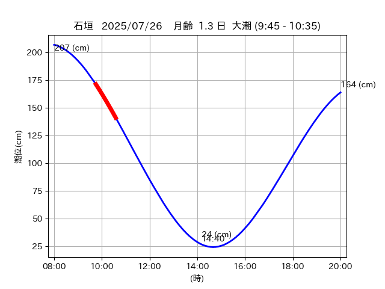

<!DOCTYPE html>
<html>
<head>
    
    <meta http-equiv="content-type" content="text/html; charset=UTF-8" />
    <script src="https://cdn.jsdelivr.net/npm/leaflet@1.9.3/dist/leaflet.js"></script>
    <script src="https://code.jquery.com/jquery-3.7.1.min.js"></script>
    <script src="https://cdn.jsdelivr.net/npm/bootstrap@5.2.2/dist/js/bootstrap.bundle.min.js"></script>
    <script src="https://cdnjs.cloudflare.com/ajax/libs/Leaflet.awesome-markers/2.0.2/leaflet.awesome-markers.js"></script>
    <link rel="stylesheet" href="https://cdn.jsdelivr.net/npm/leaflet@1.9.3/dist/leaflet.css"/>
    <link rel="stylesheet" href="https://cdn.jsdelivr.net/npm/bootstrap@5.2.2/dist/css/bootstrap.min.css"/>
    <link rel="stylesheet" href="https://netdna.bootstrapcdn.com/bootstrap/3.0.0/css/bootstrap-glyphicons.css"/>
    <link rel="stylesheet" href="https://cdn.jsdelivr.net/npm/@fortawesome/fontawesome-free@6.2.0/css/all.min.css"/>
    <link rel="stylesheet" href="https://cdnjs.cloudflare.com/ajax/libs/Leaflet.awesome-markers/2.0.2/leaflet.awesome-markers.css"/>
    <link rel="stylesheet" href="https://cdn.jsdelivr.net/gh/python-visualization/folium/folium/templates/leaflet.awesome.rotate.min.css"/>
    
            <meta name="viewport" content="width=device-width,
                initial-scale=1.0, maximum-scale=1.0, user-scalable=no" />
            <style>
                #map_3796e0c04e819be4337c866e60f0a639 {
                    position: relative;
                    width: 2048.0px;
                    height: 1600.0px;
                    left: 0.0%;
                    top: 0.0%;
                }
                .leaflet-container { font-size: 1rem; }
            </style>

            <style>html, body {
                width: 100%;
                height: 100%;
                margin: 0;
                padding: 0;
            }
            </style>

            <style>#map {
                position:absolute;
                top:0;
                bottom:0;
                right:0;
                left:0;
                }
            </style>

            <script>
                L_NO_TOUCH = false;
                L_DISABLE_3D = false;
            </script>

        
</head>
<body>
    
    
            <div class="folium-map" id="map_3796e0c04e819be4337c866e60f0a639" ></div>
        
</body>
<script>
    
    
            var map_3796e0c04e819be4337c866e60f0a639 = L.map(
                "map_3796e0c04e819be4337c866e60f0a639",
                {
                    center: [24.301, 123.986],
                    crs: L.CRS.EPSG3857,
                    ...{
  "zoom": 12,
  "zoomControl": true,
  "preferCanvas": false,
}

                }
            );

            

        
    
            var tile_layer_1c5b8be830e9fcb7220e7b296c8f86b1 = L.tileLayer(
                "https://cyberjapandata.gsi.go.jp/xyz/seamlessphoto/{z}/{x}/{y}.jpg",
                {
  "minZoom": 0,
  "maxZoom": 18,
  "maxNativeZoom": 18,
  "noWrap": false,
  "attribution": "\u5730\u7406\u9662\u5730\u56f3",
  "subdomains": "abc",
  "detectRetina": false,
  "tms": false,
  "opacity": 1,
}

            );
        
    
            tile_layer_1c5b8be830e9fcb7220e7b296c8f86b1.addTo(map_3796e0c04e819be4337c866e60f0a639);
        
    
            var marker_5afd4056ca0186ebb0070e09e3f97608 = L.marker(
                [24.3975, 123.9069],
                {
}
            ).addTo(map_3796e0c04e819be4337c866e60f0a639);
        
    
            var icon_e792948907dfd9ca0f5d37bceb73e15b = L.AwesomeMarkers.icon(
                {
  "markerColor": "orange",
  "iconColor": "white",
  "icon": "info-sign",
  "prefix": "glyphicon",
  "extraClasses": "fa-rotate-0",
}
            );
        
    
        var popup_171c76cb64c2bf369373e772d1bef676 = L.popup({
  "maxWidth": "100%",
});

        
            
                var html_e1d3051730eb70fda88f267e33a431bf = $(`<div id="html_e1d3051730eb70fda88f267e33a431bf" style="width: 100.0%; height: 100.0%;"><table><tr><td></td></tr><tr><td><center>20250726 No.1 </center></table></td></tr></table</div>`)[0];
                popup_171c76cb64c2bf369373e772d1bef676.setContent(html_e1d3051730eb70fda88f267e33a431bf);
            
        

        marker_5afd4056ca0186ebb0070e09e3f97608.bindPopup(popup_171c76cb64c2bf369373e772d1bef676)
        ;

        
    
    
                marker_5afd4056ca0186ebb0070e09e3f97608.setIcon(icon_e792948907dfd9ca0f5d37bceb73e15b);
            
    
            var poly_line_1aa9b2650a36cb049e8c40f282556320 = L.polyline(
                [[24.3975, 123.9069], [24.4008, 123.905]],
                {"bubblingMouseEvents": true, "color": "#FF00FF", "dashArray": null, "dashOffset": null, "fill": false, "fillColor": "#FF00FF", "fillOpacity": 0.2, "fillRule": "evenodd", "lineCap": "round", "lineJoin": "round", "noClip": false, "opacity": 1.0, "smoothFactor": 1.0, "stroke": true, "weight": 3}
            ).addTo(map_3796e0c04e819be4337c866e60f0a639);
        
</script>
</html>